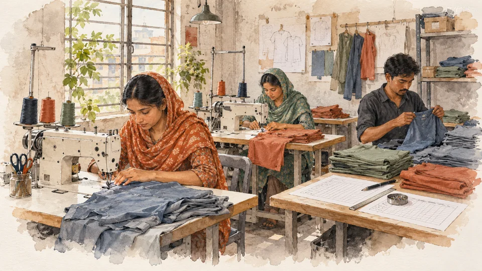
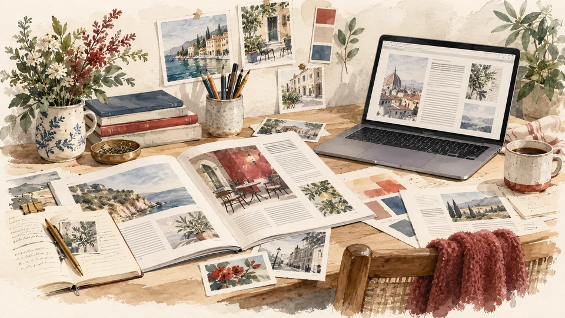
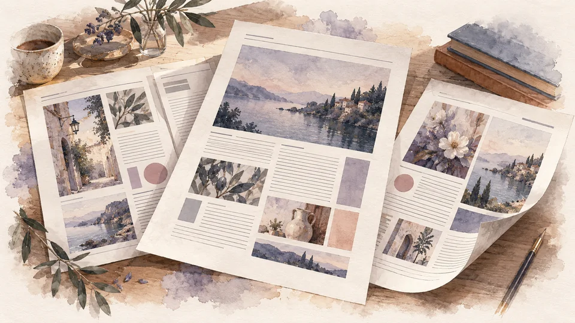

Nasir Khan
Product Engineer · Independent Builder
Ideas,made real.
I turn ideas into products — from the system underneath to the experience people touch.
Selected workOpen to roles and collaborations


A digital publication I designed, built and operated from publishing workflow to deployment.
04
Pathshala
Assignments, submissions and grading across three roles.
Explore Pathshala05
Zephra
The URL changes the message. Unknown context leaves it alone.

Explore ZephraUnder the surfaceChange the context.
Change the context.
See the decision.
DecisionTOOLS MATCHED
- 01Context
keyword = rfid-tool-tracking
- 02Match
Exact phrase match · tools
- 03Response
Approved copy · five permitted targets
Approved headline
Track Every Tool With RFID
Every tool accounted for, every shift
Deterministic · No model call · Fail-open
PlaygroundThings I made because
Things I made because
I wanted to know
what would happen.
AboutCuriosity is
Curiosity is
my starting point.
I'm Nasir Khan. I like taking an idea apart, understanding the system underneath it and turning it into software people can actually use.
My work moves across full-stack products, operational systems, AI agents and interactive interfaces.